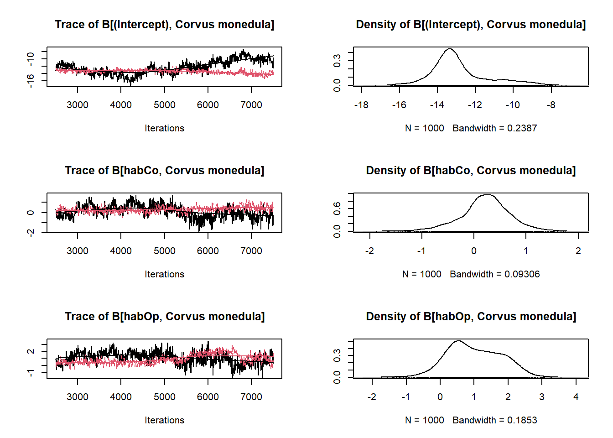
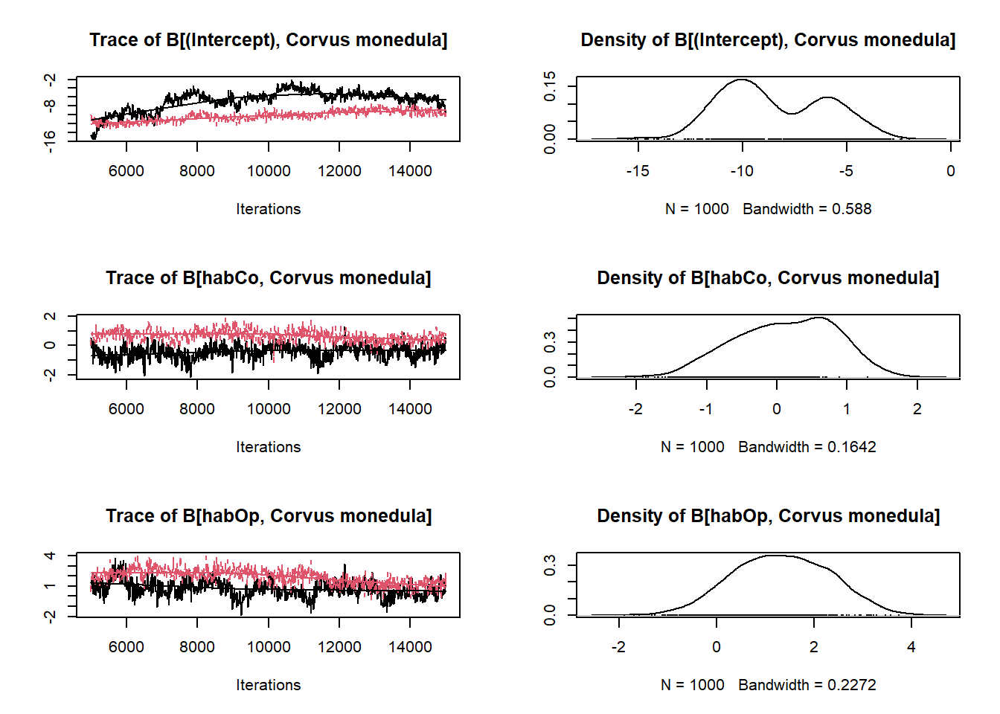
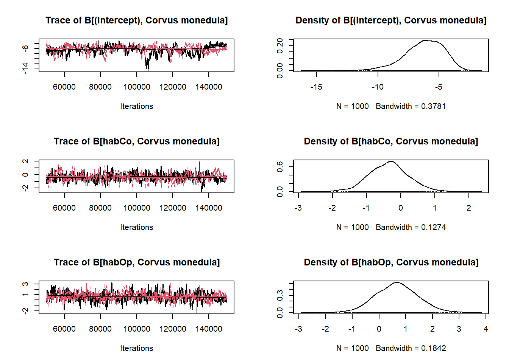
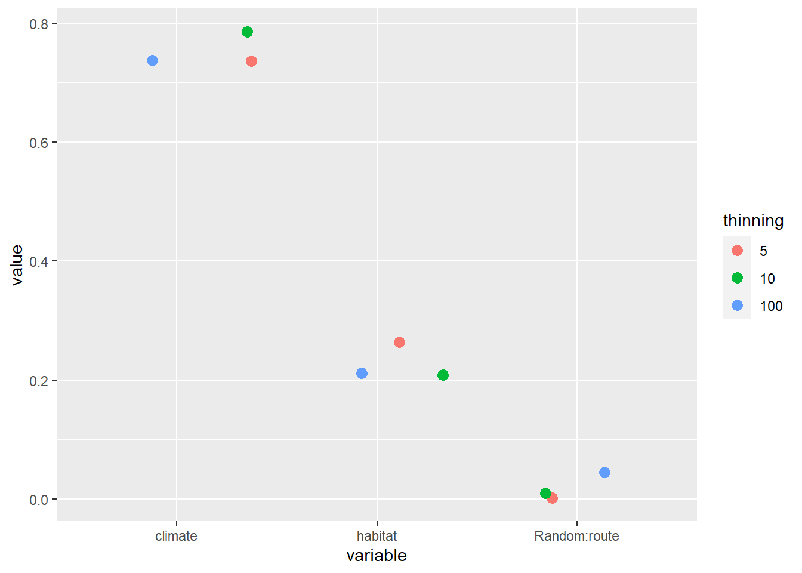
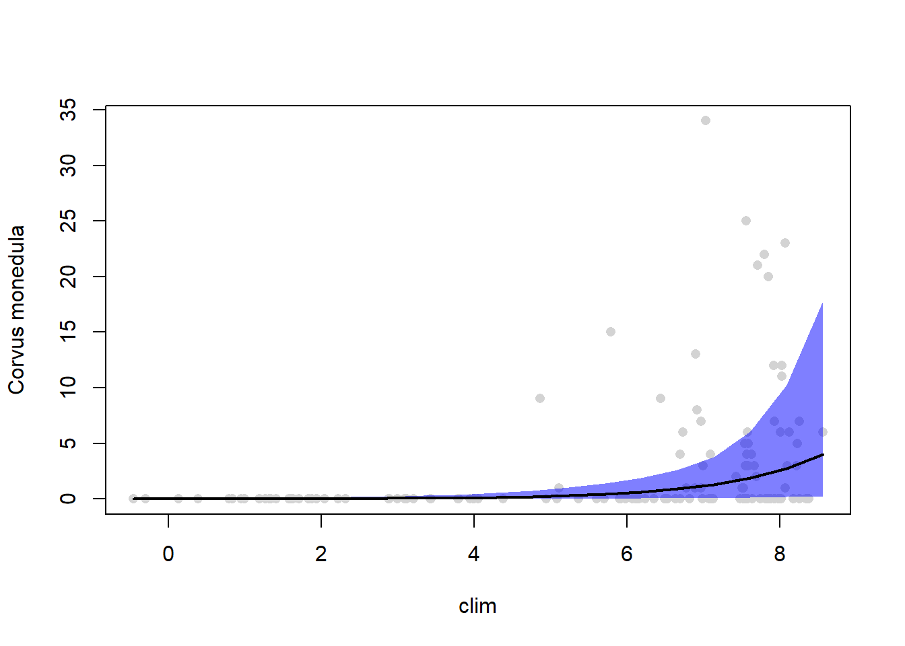
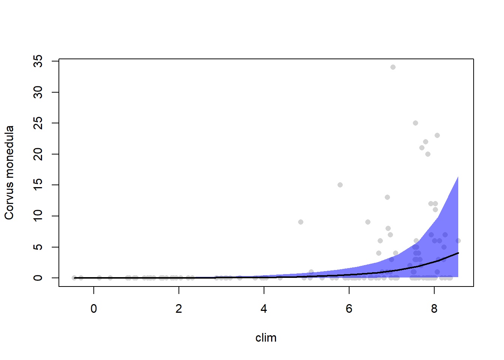
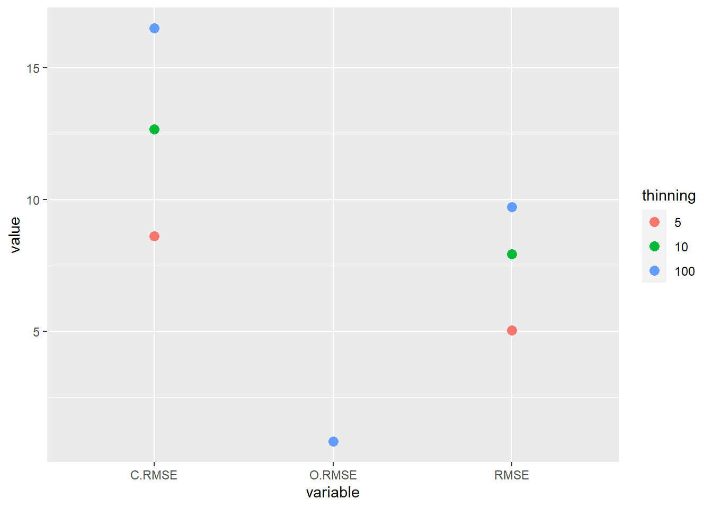
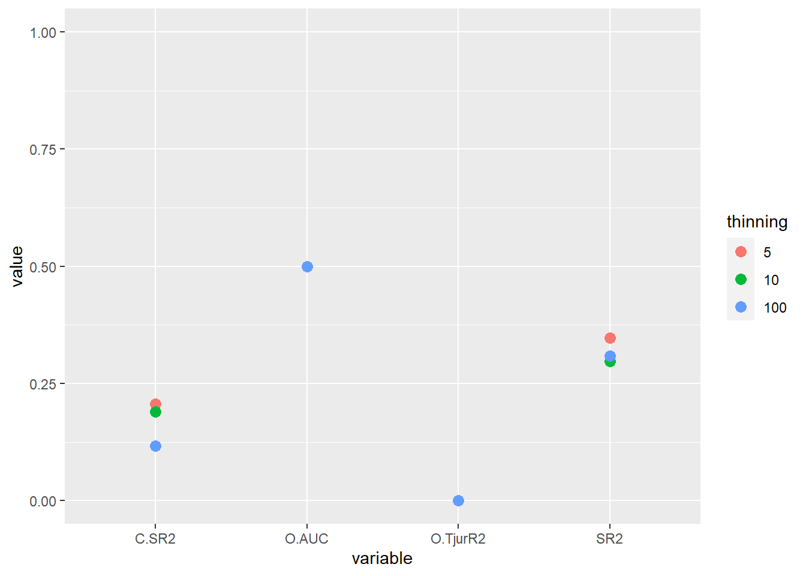
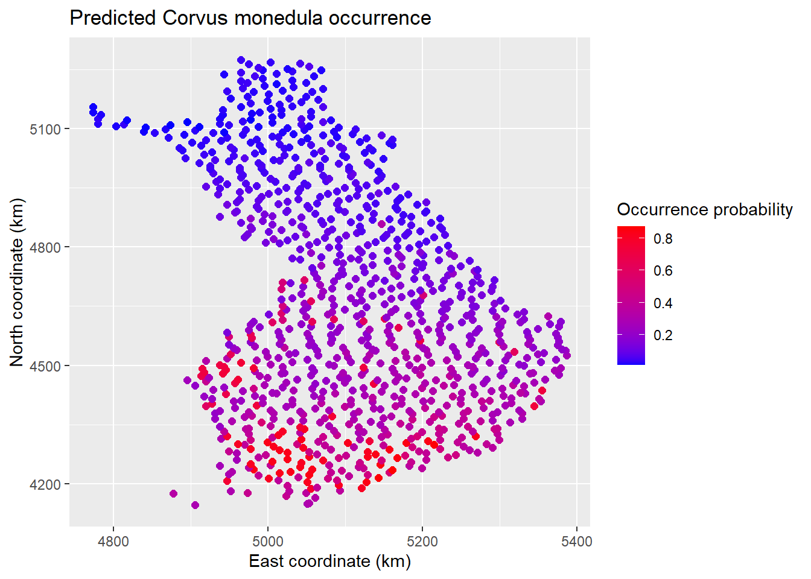

Introduction
In this short example, we will use the Hierarchical Modeling of Species Communities (HMSC, Ovaskainen and Abrego (2020)) approach through its implementation in the HMSC-R package (Tikhonov et al. 2020) to analyze and predict the distribution of the Western jackdaw (Corvus monedula) in Finland.
This post works through a univariate example of HMSC - if you are interested in a multi-species example, see here.
However, I suggest you start with the univariate example if you are not familiar with HMSC. This post accompanies the advanced methods in multivariate statistics lecture at the University of Koblenz-Landau.
It will not delve deeply into the theoretical aspects of HMSC but focus on it’s implementation in R.
For more introductory material to HMSC see Ovaskainen et al. (2017), Ovaskainen and Abrego (2020), or the official website.
Preparing the analysis
To run this code you will need to install the pacman R package beforehand but this will take care of all the other packages required.
if(!require(pacman)) install.packages("pacman")
p_load(abind,
data.table,
dplyr,
ggplot2,
here,
kableExtra,
Hmsc,
magrittr,
stringr)
You can download the data we use here.
We use the Finnish bird data that are often used by the creators of HMSC to demonstrate the method (e.g. Chapter 5 of Ovaskainen and Abrego (2020) or Tikhonov et al. (2020)). We will this analysis on the abundance and occurence C. monedula in the year 2014.
# data.directory needs to be a string, pointing
# to where your data is
data = fread(file.path(data.directory, "data.csv"))
# subset to the year 2014 using data.table syntax
data = data[Year == 2014]
# drop unused factor levels
# - useful for factors levels missing from 2014
data %<>% droplevels()
# extract environmental covariates
XData = as.data.frame(data[, c("Habitat", "AprMay")])
names(XData) = c("hab", "clim")
# extract species data
Y = as.matrix(data$Corvus_monedula)
colnames(Y) = "Corvus monedula"
# extract spatial coordinates
xy = as.matrix(data[, c("x", "y")])
# the study design matrix - in this case the name of the site
studyDesign = data.frame(route = factor(data$Route))
rownames(xy) = studyDesign[, 1]
# create a spatial random level
rL = HmscRandomLevel(sData = xy)
# define the formula for the model: habitat (a factor)
# and the raw second order polynomial of climate
XFormula = ~ hab + poly(clim, degree = 2, raw = TRUE)
In the next step, we define the model using the Hmsc() function.
Most arguments here are self-explanatory but two arguments are worth mentioning:
distr is the distribution function
ranLevels needs to be a list, even if you only have one random level.
Fitting the model
m_full = Hmsc(Y=Y,
XData=XData,
XFormula=XFormula,
distr = "lognormal poisson",
studyDesign = studyDesign,
ranLevels=list(route=rL))
If you are not familiar with Bayesian models, this step might be unfamiliar to you.
We did not fit the model yet.
We only defined its structure.
In calls to modeling functions, you might be more familiar with, like lm(), glm(), or lme() this happens in one step.
Now let’s have a look at the object we created by defining the model.
From the environment pane, we can see that it has the class Hmsc.
When we enter the object name a string is returned with the number of sampling units, species, environmental covariates, traits and random levels. str() tells us that it is a list with, in this case, 71 objects.
m_full
## Hmsc object with 137 sampling units, 1 species, 7 covariates, 1 traits and 1 random levels
Next comes the truly time-consuming step: fitting the model with Markov Chain Monte Carlo.
We need to set the number of chains (nChains), the thinning (thin), the number of CPU cores to use (nParallel), the number of samples (samples), the length of the burn-in or transient (transient) and the interval at which we want the function to report its progress (verbose).
In this example, we use three different values for thin (5,10 and 100) to show how the fit changes.
We fit the models in a loop and store them in a list.
Both steps are not necessary if you only fit a model with one value for each parameter.
A low thinning means the model is fit quicker since fewer samples have to be taken.
However, the chain convergence can be worse because autocorrelation within chains increases.
We should be able to see this with the effective sample size.
When you fit such models you should start with a low thin (like 5) to estimate run time and to get an idea about the general direction of the results.
Even though the estimate will change when you increase the thinning, you are often able to start writing your result section while the larger models are still running.
Simply plug in the estimates from the final model once its done.
You should increase the thinning until the model fit is satisfactory (high effective sampling size, low potential scale reduction factor, converged and stable chains).
nChains = 2
thin = c(5, 10, 100)
nParallel = max(round(parallel::detectCores() / 2),
nChains)
samples = 1000
transient = 500 * thin
verbose = 500 * thin
for (i in seq_along(thin)) {
model[[i]] = sampleMcmc(
m_full,
thin = thin[i],
samples = samples,
transient = transient,
nChains = nChains,
verbose = verbose,
initPar = "fixed effects"
)
}
After fitting the models, we need to convert them into objects that the Coda R-package (Plummer et al. 2006) can use.
With the coda objects, we can plot trace plots or posterior density estimates for each parameter.
mpost = list()
for (i in seq_along(model)) {
mpost[[i]] = convertToCodaObject(model[[i]],
spNamesNumbers = c(T, F),
covNamesNumbers = c(T, F))
}
plot(mpost[[1]]$Beta[, 1:3])

plot(mpost[[2]]$Beta[,1:3])

plot(mpost[[3]]$Beta[,1:3])

We can see that a thinning of 100 is necessary to attain satisfactory MCMC convergence.
The potential scale reduction factors (aka Gelman diagnostic) and effective sample sizes confirm this.
Otso Ovaskainen suggests in his lectures that, as a rule of thumb, the latter should be below 1.1.
The effective sample size should be close to the actual sample size (in this case 1000).
Even for the model with a thinning of 100, most effective sample sizes are low.
For a publication, we should further increase the thinning.
ess.beta = effectiveSize(mpost[[3]]$Beta)
|
|
ess
|
|
(Intercept)
|
110.1091
|
|
habCo
|
433.1376
|
|
habOp
|
593.9599
|
|
habUrb
|
787.8184
|
|
habWe
|
236.7238
|
|
poly(clim, degree = 2, raw = TRUE)1
|
184.9870
|
|
poly(clim, degree = 2, raw = TRUE)2
|
404.2062
|
psrf.beta = gelman.diag(mpost[[3]]$Beta,
multivariate = FALSE)$psrf
|
|
psrf.Point.est.
|
psrf.Upper.C.I.
|
|
(Intercept)
|
1.0598018
|
1.133281
|
|
habCo
|
0.9995814
|
1.000565
|
|
habOp
|
1.0024632
|
1.007084
|
|
habUrb
|
0.9996922
|
1.001133
|
|
habWe
|
1.0000163
|
1.000624
|
|
poly(clim, degree = 2, raw = TRUE)1
|
1.0750217
|
1.261937
|
|
poly(clim, degree = 2, raw = TRUE)2
|
1.0630630
|
1.245347
|
Assessing model fit
HMSC has a pair of functions that computes several goodness-of-fit metrics: computePredictedValues() and evaluateModelFit().
To compare the three thinning values once more, we loop over all three models.
I use two plots to show the results because some metrics are bound between 0 and 1, while others can take larger values.
MF = list()
for (i in 1:3) {
preds = computePredictedValues(model[[i]],
expected = FALSE)
MF[[i]] = evaluateModelFit(hM = model[[i]],
predY = preds)
}
metrics = names(MF[[1]])
values =
append(unlist(MF[[1]]),
append(unlist(MF[[2]]),
unlist(MF[[3]])))
dt_MF = tibble(
value = values,
metric = rep(metrics,
times = 3),
thinning = factor(rep(c(5, 10, 100),
each = length(MF[[1]])))
)
par(mfrow = c(1,2))
dt_MF %>%
filter(str_detect(string = metric, pattern = "RMSE")) %>%
ggplot(aes(x = metric, y = value, col = thinning)) +
geom_point(size = 3)

dt_MF %>%
filter(str_detect(
string = metric,
pattern = "RMSE",
negate = TRUE
)) %>%
ggplot(aes(x = metric, y = value, col = thinning)) +
geom_point(size = 3) +
ylim(0,1)

Let’s quickly go through these metrics one by one.
RMSE is the Root Mean Square Error between predicted and observed values.
\(RMSE = \sqrt{\frac{1}{n}\Sigma_{i=1}^n (y_{ij}-p_{ij}})^2\), where \(y_{ij}\) is the observed value and \(p_{ij}\) the value predicted by the model.
In a model with a RSME of 2 (like that with thinning 10) our average prediction is either too large or too small by 2.
As we increase the thinning to 100 the RSME increases to approximately 4.6.
SR2 is a pseudo-\(R^2\) that HMSC uses for Poisson-models.
It is computed as the squared Spearman correlation between observed and predicted values, times the sign of the correlation. It ranges between 0 and 1.
Here again, we see that the model with a thinning of 10 has the best fit and the model with a thinning of 100 the worst.
Now we have the same two values again but with a C. in front of it (i.e. C.RMSE and C.SR2). The C. is short for counts.
These values only take into account that the model predicts the counts correctly given that the species occurs.
The model with the best convergence in MCMC (i.e. thinning = 100) has the worst fit (i.e. lowest C.SR2 and highest C.RMSE).
Lastly, there are three more values with O in the beginning.
As you might have figured out by now, the O stands for occurrence.
For these metrics, abundances are censored to presence-absence and we only evaluate whether the model can predict the species’ occurrences accurately.
The three metrics are RSME, TjurR2 and AUC.
AUC is short for Area under the Curve and was proposed by Pearce and Ferrier (2000). Tjur R2 is a pseudo-\(R^2\) value for binary data such as 0 or 1, presence or absence and was proposed by Tjur (2009). We will not get into the details of their computation here but it is important to note that their scales differ.
A model that performs no better than random has an AUC of 0.5 and a perfect model has an AUC of 1. The same models would get Tjur \(R^2\) 0 and 1. Thus we can expect the Tjur \(R^2\) of a model to be lower than it’s AUC.
Using the AUC in species distribution models was recently criticized by Jiménez and Soberón (2020).
Model results and interpretation
We can use variance partitioning to see how important sets of variables are in determining the abundance of C. monedula.
First, we group all covariates into one of two groups: habitat or climate.
In our example, the number of covariates is low and each group basically represents one variable.
The group habitat represents the factor habitat with all its dummy-variable levels and the group climate the second order polynomial of April and May mean temperatures.
Again we are interested in the results for all three models, to see whether the non-convergent models perform differently.
groupnames = c("habitat", "climate")
group = c(1, 1, 1, 1, 1, 2, 2)
VP = list()
for (i in 1:3) {
VP[[i]] = computeVariancePartitioning(model[[i]],
group = group,
groupnames = groupnames)
}
dt_VP = tibble(
variable = rep(c("habitat", "climate", "Random:route"), times = 3),
value = c(c(VP[[1]]$vals), c(VP[[2]]$vals), c(VP[[3]]$vals)),
thinning = factor(rep(c(5, 10, 100), each = 3))
)
dt_VP %>%
ggplot(aes(x = variable, y = value, col = thinning)) +
geom_point(size = 3, position = "jitter")

From the plot we can see that this is not the case.
All three models agree that climate explains more of the variation than habitat and habitat more than space (which is equal to unexplained variance).
Next, we will predict the probability of occurrence and the abundance of C. monedula.
First along hypothetical gradients of covariates and afterwards across a grid of Finland.
I will only show this with the third model (i.e. thinning = 100) but feel free to try this with the others.
Additionally, we need to transform categorical variable into factors within the model object.
We can construct our artificial gradient with the constructGraident() function.
The function has three arguments: hm is the model we want to use for the prediction, focalVariable is the variable our artificial gradient is based on, and non.focalVariables describes how the other variables are handled.
While the first two arguments are self-explanatory, the third one requires some explanation.
If there are more than one variable in the model, the response of the species could vary along all of them.
As we want to predict the changes in abundance along one focal variable we need to make assumptions about the others.
This assumption can differ between non-focal variables.
Three assumptions are available: 1: the non-focal variable is equal to its overall most common value; 2: the non-focal variable is equal to its most common value conditional on the focal variable; 3: the non-focal variable is fixed at a supplied value.
In the code below, we test the first two options.
m = model[[3]]
# Convert to factor
m$XData$hab %<>% factor()
Gradient = constructGradient(hM = m,
focalVariable = "clim",
non.focalVariables = list(hab = list(1)))
predY = predict(m,
Gradient = Gradient,
expected = TRUE)
Gradient2 = constructGradient(m,
focalVariable = "clim",
non.focalVariables = list(hab = 2))
predY2 = predict(m,
Gradient = Gradient2,
expected = TRUE)
plotGradient(m,
Gradient,
pred = predY,
measure = "Y",
index = 1,
showData = TRUE)

plotGradient(m,
Gradient2,
pred = predY2,
measure = "Y",
index = 1,
showData = TRUE)

We can evaluate the predictive performance with cross-validation.
HMSC-R has functions that make this very easy.
The first is createPartition().
This function takes a model (hm), the number of folds (nfolds) and as an optional argument a column which indicates a variable that is used to group observations.
In this case, all observations from the same route are in the same fold.
This function creates an object we can supply to the partition argument of the computePredictedValues() function.
# Create partitions (folds)
partition = list()
MF = list()
for (i in 1:3) {
partition = createPartition(hM = model[[i]],
nfolds = 2,
column = "route")
preds = computePredictedValues(model[[i]],
partition = partition)
MF[[i]] = evaluateModelFit(hM = model[[i]], predY = preds)
rm(partition, preds)
}
As expected the fit is worse than before.
Especially for the occurrence measures, the measures show that the model is barely better guessing.
dt_MF = data.table(
variable = rep(c("RMSE", "SR2", "O.AUC", "O.TjurR2", "O.RMSE", "C.SR2", "C.RMSE"), times=3),
value= unlist(lapply(MF, unname)),
thinning = factor(rep(c(5,10,100), each = 7))
)
par(mfrow = c(1,2))
dt_MF %>%
filter(str_detect(string = variable, pattern = "RMSE")) %>%
ggplot(aes(x = variable, y = value, col = thinning)) +
geom_point(size = 3)

dt_MF %>%
filter(str_detect(
string = variable,
pattern = "RMSE",
negate = TRUE
)) %>%
ggplot(aes(x = variable, y = value, col = thinning)) +
geom_point(size = 3) +
ylim(0,1)

Lastly, we also have a grid of values for sampling sites across Finland with their habitat types and climates.
The grid is also part of the data that was linked in the beginning of this post.
Using this data we can predict the occurrence probability and abundance of C. monedula across Finland.
m = model[[3]]
grid = read.csv(file.path(data.directory,
"grid_1000.csv"))
grid = droplevels(subset(grid, !(Habitat=="Ma")))
xy.grid = as.matrix(cbind(grid$x, grid$y))
XData.grid = data.frame(hab = grid$Habitat,
clim = grid$AprMay)
Gradient = prepareGradient(m, XDataNew = XData.grid,
sDataNew = list(route = xy.grid))
predY = predict(m, Gradient = Gradient)
EpredY = apply(abind(predY,along = 3), c(1,2), mean)
EpredO = apply(abind(predY,along = 3), c(1,2), FUN =
function(a) {mean(a > 0)})
mapData=data.frame(xy.grid, EpredY,EpredO)
names(mapData)=c("xCoordinates", "yCoordinates", "PredictedAbundance", "PredictedOccurence")
spO <- ggplot(data = mapData,
aes(x= xCoordinates,
y= yCoordinates,
color=PredictedOccurence)
) +
geom_point(size=2)
spC <- ggplot(data = mapData,
aes(x= xCoordinates,
y= yCoordinates,
color=PredictedAbundance)
) +
geom_point(size=2)
spO +
ggtitle("Predicted Corvus monedula occurrence") +
xlab("East coordinate (km)") +
ylab("North coordinate (km)") +
scale_color_gradient(low = "blue",
high="red",
name ="Occurrence probability")
spC +
ggtitle("Predicted Corvus monedula abundance") +
xlab("East coordinate (km)") +
ylab("North coordinate (km)") +
scale_color_gradient(low = "blue",
high="red",
name ="Abundance")

References
Jiménez, Laura, and J. Soberón. 2020. “Leaving the area under the receiving operating characteristic curve behind: An evaluation method for species distribution modeling applications based on presence-only data.” Methods in Ecology and Evolution 1 (1): 1–2. https://doi.org/10.1111/j.2041-210x.2010.00016.x.
Ovaskainen, Otso, and Nerea Abrego. 2020. Joint Species Distribution Modelling: With Applications in R. Cambridge University Press.
Ovaskainen, Otso, Gleb Tikhonov, Anna Norberg, F Guillaume Blanchet, Leo Duan, David Dunson, Tomas Roslin, and Nerea Abrego. 2017. “How to Make More Out of Community Data? A Conceptual Framework and Its Implementation as Models and Software.” Ecology Letters 20 (5): 561–76.
Pearce, Jennie, and Simon Ferrier. 2000. “Evaluating the Predictive Performance of Habitat Models Developed Using Logistic Regression.” Ecological Modelling 133 (3): 225–45.
Tikhonov, Gleb, Øystein H Opedal, Nerea Abrego, Aleksi Lehikoinen, Melinda MJ de Jonge, Jari Oksanen, and Otso Ovaskainen. 2020. “Joint Species Distribution Modelling with the R-Package Hmsc.” Methods in Ecology and Evolution 11 (3): 442–47.
Tjur, Tue. 2009. “Coefficients of Determination in Logistic Regression Models—a New Proposal: The Coefficient of Discrimination.” The American Statistician 63 (4): 366–72.